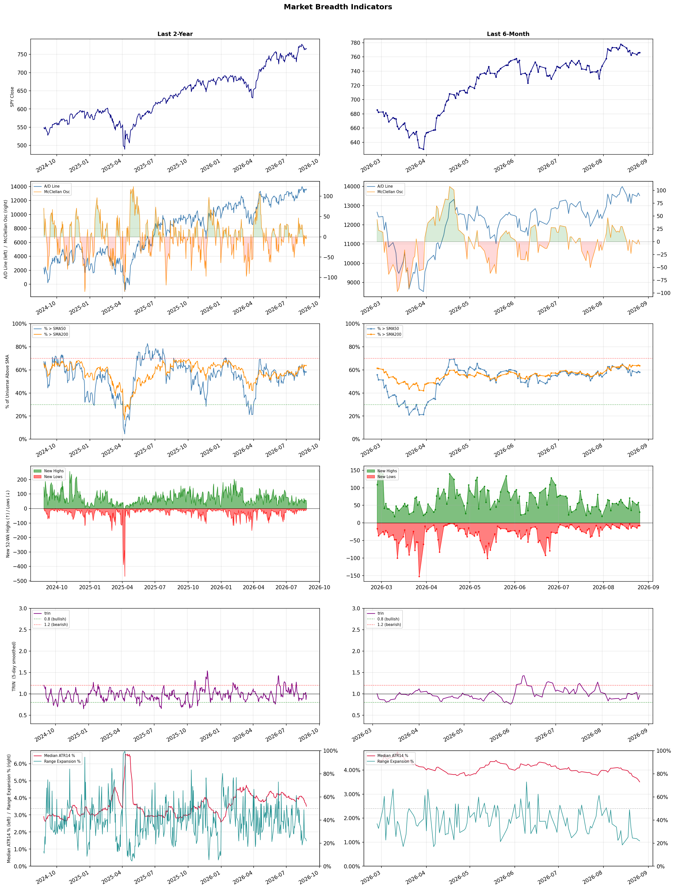

A daily market breadth and sector rotation report for active investors
| Item | Read |
|---|---|
| Regime | Selective Risk-On |
| Risk posture | Selective |
| Universe | 1,331 stocks tracked · 31 new 52-week highs · 30 active swing setups |
| Breadth | 58.1% of tracked stocks are above SMA50 — neutral range, new highs exceed new lows (31 vs 8), McClellan oscillator (breadth momentum) is negative at -5.0 |
| Leadership | Diagnostics & Research, Health Information Services, and Copper |
| Weakest groups | Footwear & Accessories, Chemicals, and Auto Manufacturers |
Use this report to prioritize research and chart review; validate entries, stops, liquidity, earnings, and risk before acting.
| Item | Read |
|---|---|
| Primary read | Selective Risk-On regime with Selective risk posture. |
| Research queue | TWST, WGS, NTRA, PSNL, GH |
| Leadership focus | Diagnostics & Research, Health Information Services, and Copper |
| Caution list | Footwear & Accessories, Chemicals, and Auto Manufacturers |
| Review prompt | Check extension risk, chart location, fundamentals, valuation, and earnings before using any research row. |
| Item | Read |
|---|---|
| Primary read | 1 active risk warnings; use screen output as watchlist input only. |
| Bullish screens | NEO, NTRA, RVTY, AVTX, REPL |
| Bearish screens | APTV, BAK, NKE |
| Alerts / levels | Automated trigger, stop, ATR, liquidity, reward/risk, and event-risk levels are pending future enrichment. |
| Review prompt | Open the linked chart, define trigger and invalidation, then check liquidity and event risk independently. |
Risk Posture: Selective — screen backdrop supports selective research in leading industries
Metric context: McClellan below -50 = elevated selling pressure; below -100 = washout territory. Range Expansion = share of stocks with daily range above their 20-day average. Signal Density = share of tracked names appearing in signal screens.
| Breadth Date | % > SMA50 | % > SMA200 | New Highs | New Lows | McClellan | Median Range | Avg Range | Median ATR14 | Range Expansion | Signal Density |
|---|---|---|---|---|---|---|---|---|---|---|
| 2026-08-26 | 58.1% | 63.6% | 31 | 8 | -5.0 | 2.7% | 3.2% | 3.5% | 22.0% | 5.8% |

Prior comparison date: August 25, 2026
| Metric | Prior | Current | Change |
|---|---|---|---|
| Regime | Selective Risk-On | Selective Risk-On | unchanged |
| Risk Posture | Selective | Selective | unchanged |
| % > SMA50 | 58.6% | 58.1% | -0.6 pts |
| % > SMA200 | 64.1% | 63.6% | -0.6 pts |
| New Highs | 56 | 31 | -25 |
| New Lows | 8 | 8 | +0 |
Top-10 industries entering: - and Banks - Diversified. Top-10 industries leaving: Oil & Gas E&P and Software - Application. New multi-signal long setups: AVTX, BNS, NEO, NMR, NTRA, NVCR, REPL, RVTY. New multi-signal short setups: APTV, NKE.
| Status | Tickers | Read |
|---|---|---|
| Added | APTV, AVTX, BNS, C, CBOE, CRSR, GRAB, IE | New technical screen matches vs prior report. |
| Removed | ACAD, AMT, BTE, FCX, GNL, HALO, ILMN, IVZ | No longer present in today's technical screen matches. |
| Still Active | ABSI, APPS, BAK, CRON, DB, GRND, HTGC, KOS | Appeared in both current and prior reports. |
| Promoted | none | Model Screen Score improved by at least 15 points. |
| Downgraded | none | Model Screen Score declined by at least 15 points. |
| Direction | Industry | ETF | Prior Rank | Current Rank | Days | Rank Change |
|---|---|---|---|---|---|---|
| Rose | Gold | GDX | 86 | 4 | 42 | +82 |
| Rose | Copper | COPX | 83 | 3 | 42 | +80 |
| Rose | Uranium | URA | 88 | 23 | 35 | +65 |
| Rose | Capital Markets | KCE | 75 | 19 | 14 | +56 |
| Rose | Other Industrial Metals & Mining | N/A | 88 | 35 | 42 | +53 |
Bull: Gold is rising in relative strength primarily due to increasing concerns over economic stability and currency debasement, as highlighted by headlines discussing the "debasement trade" and Morgan Stanley's bullish stance following a breakout in gold prices. Additionally, with gold sitting near $4,270 while gold miners' ETFs like GDX remain 22% below their peak, there is a compelling catch-up trade opportunity, suggesting that investor sentiment is shifting towards gold as a safe haven amidst ongoing market pressures and inflationary concerns.
Bear: While the rising relative strength of gold may seem promising, it is essential to consider that the gold miners' ETFs like GDX remain significantly below their peak, indicating a lack of investor confidence in the sector's ability to capitalize on gold's price increases. Additionally, the taxation on gold ETFs as collectibles at a higher rate than other investments could deter potential investors, while ongoing industry pressures and valuation resets for major mining companies, such as Barrick, suggest that the mining sector may face operational challenges that could hinder profitability despite rising gold prices.
Verdict: The rising trend in gold prices is fundamentally driven by increasing investor concerns over economic stability and currency debasement, prompting a flight to gold as a safe haven asset. However, a key risk lies in the significant underperformance of gold miners' ETFs like GDX, which may reflect a lack of confidence in the mining sector's ability to leverage higher gold prices due to operational challenges and unfavorable taxation on gold investments. Investors should closely monitor the performance of mining stocks and potential regulatory changes that could impact the attractiveness of gold as an investment.
Sources: Yahoo Finance, Google News
Bull: Copper is experiencing a rise in relative strength primarily due to its critical role in the electrification and renewable energy sectors, as highlighted by the headlines discussing the "electrification squeeze" and the shift towards copper as a key component in AI and technology investments. Additionally, the significant gains in copper-related ETFs like COPX, which has surged 115% in a year, indicate strong investor sentiment and a shift in focus from traditional sectors, as evidenced by the mention of Wall Street playing catch-up. The recent performance of Southern Copper Corp (SCCO) also underscores the bullish momentum in copper mining stocks, further supporting the case for copper's rising strength in the market.
Bear: While the bullish narrative surrounding copper's role in electrification and technology is compelling, it overlooks several critical headwinds that could dampen future performance. The recent surge in copper prices may be driven more by speculative trading and short-term investor sentiment rather than sustainable demand fundamentals, especially given the potential for economic slowdowns and rising interest rates that could stifle investment in renewable energy projects. Additionally, the significant gains in ETFs like COPX could lead to overvaluation, making them vulnerable to corrections as market realities set in.
Verdict: The rising strength of copper is fundamentally driven by its essential role in the electrification and renewable energy sectors, spurred by increased investments in technology and infrastructure. However, the key risk lies in the potential for economic slowdowns and rising interest rates, which could dampen demand and lead to overvaluation in copper-related assets, making them susceptible to corrections if market conditions shift. Investors should closely monitor macroeconomic indicators and interest rate trends to gauge the sustainability of copper's upward momentum.
Sources: Yahoo Finance, Google News
Bull: The recent rise in the relative strength of uranium stocks can be attributed to the increasing demand for nuclear energy as a clean and reliable power source, particularly highlighted by the oversold bounce in nuclear stocks and the rally of 57% over the past year. Despite recent volatility, the ongoing interest in small modular reactors (SMRs) like those from NuScale Power and Oklo indicates a growing recognition of nuclear's role in meeting energy needs, especially as AI-driven demand for power continues to escalate. Additionally, the broader market's scrutiny of valuations suggests that while there may be short-term fluctuations, the long-term fundamentals supporting uranium remain strong, particularly as global energy transitions continue to favor low-carbon options.
Bear: While the bullish case highlights the increasing demand for nuclear energy and the potential of small modular reactors, the recent volatility and significant selloff in uranium stocks—evidenced by a 30% crash in ETFs—suggest that investor sentiment is faltering, likely due to overvaluation concerns and the uncertain regulatory landscape surrounding nuclear energy. Furthermore, the reliance on AI-driven power demand may not translate into sustainable growth for uranium stocks, especially as alternative energy sources continue to gain traction and compete for investment. The current rally may merely be a short-term correction rather than a signal of long-term strength in the uranium sector.
Verdict: The recent rise in uranium stocks is fundamentally driven by increasing demand for nuclear energy as a clean power source, bolstered by interest in small modular reactors and a broader shift towards low-carbon energy options. However, investors should remain cautious of the key risk posed by potential overvaluation concerns and the uncertain regulatory environment, which could undermine long-term growth prospects in the sector. It may be prudent to monitor market sentiment closely and consider a diversified approach to mitigate exposure to volatility in uranium investments.
Sources: Yahoo Finance, Google News
Bull: The Capital Markets sector, as represented by the SPDR S&P Capital Markets ETF (KCE), is experiencing rising relative strength likely due to a combination of improving market sentiment and strong performance from key players like Interactive Brokers, as indicated by recent headlines. Additionally, the bullish outlook from J.P. Morgan Private Bank, highlighting sectors primed for growth, suggests that investor confidence is shifting towards capital markets as a favorable investment, supported by easing oil prices and a firming tech sector that bolster overall market stability.
Bear: While the relative strength of the SPDR S&P Capital Markets ETF (KCE) may appear promising, it is crucial to consider the broader economic environment, which is marked by rising interest rates and potential regulatory headwinds that could pressure profit margins in the capital markets sector. Furthermore, the bullish sentiment from analysts like J.P. Morgan may not fully account for the volatility and uncertainty stemming from geopolitical tensions and inflationary pressures, which could dampen investor confidence and lead to a correction in stock prices.
Verdict: The capital markets sector is likely experiencing rising relative strength due to improving market sentiment, driven by strong performances from key players and a bullish outlook from analysts, suggesting a shift in investor confidence towards this sector. However, the key risk lies in the broader economic environment characterized by rising interest rates and potential regulatory challenges, which could pressure profit margins and lead to increased volatility, warranting caution for investors.
Sources: Yahoo Finance, Google News
Bull: The rising relative strength of the Other Industrial Metals & Mining sector can be attributed to increasing investor interest highlighted by multiple reports, such as The Motley Fool's identification of the "5 Best Metals Stocks for 2026," which underscores a positive outlook for the industry. Additionally, BofA's identification of top stock picks in this "red-hot metals sector" suggests strong institutional confidence, likely driven by robust demand for industrial metals in emerging technologies, including AI and renewable energy, as indicated by the Boston Consulting Group's focus on AI-powered mining innovations. This combination of bullish sentiment and strategic advancements positions the sector favorably for growth.
Bear: While the rising relative strength and positive headlines may suggest a bullish outlook for the Other Industrial Metals & Mining sector, it is crucial to consider the potential for overvaluation driven by speculative interest rather than fundamental demand. Additionally, the industry's reliance on cyclical economic conditions and the possibility of a slowdown in global growth, particularly in key markets like China, could dampen demand for industrial metals, undermining the optimistic projections highlighted by analysts. Furthermore, advancements in technology and recycling could reduce the long-term need for newly mined metals, posing a structural risk to the sector's growth narrative.
Verdict: The rising strength of the Other Industrial Metals & Mining sector is primarily driven by increasing demand for industrial metals fueled by advancements in emerging technologies such as AI and renewable energy, which have garnered significant investor interest and institutional confidence. However, a key risk to this bullish outlook is the potential for overvaluation and a slowdown in global economic growth, particularly in major markets like China, which could adversely impact demand and undermine the sector's growth trajectory. Investors should remain vigilant about these macroeconomic factors while considering opportunities in this promising sector.
Sources: Google News
| Direction | Industry | ETF | Prior Rank | Current Rank | Days | Rank Change |
|---|---|---|---|---|---|---|
| Fell | Airlines | N/A | 13 | 83 | 42 | -70 |
| Fell | REIT - Retail | N/A | 8 | 77 | 28 | -69 |
| Fell | Integrated Freight & Logistics | N/A | 16 | 82 | 35 | -66 |
| Fell | REIT - Healthcare Facilities | XLRE | 3 | 68 | 35 | -65 |
| Fell | Leisure | N/A | 16 | 79 | 28 | -63 |
Bear: While the bull analyst highlights rising operational costs and economic uncertainties as primary concerns, it's crucial to recognize that these challenges are compounded by a potential oversaturation of the market and increased competition. The focus on "which airline stocks to buy in 2026" indicates a speculative mindset rather than solid fundamentals, suggesting that investors may be overlooking the structural issues facing the industry, such as high debt levels and the ongoing impact of geopolitical tensions on international travel demand, which could further suppress profitability and hinder recovery in the near term.
Bull: The relative weakness in the airline industry can be attributed to rising operational costs and economic uncertainties, which are highlighted in recent headlines discussing the outlook for major airlines like Delta and American Airlines. Factors such as fluctuating fuel prices, labor costs, and potential economic slowdowns are creating headwinds for profitability, leading to cautious investor sentiment despite the long-term growth potential of the sector. Additionally, the focus on which airline stocks to buy in 2026 suggests that investors are currently weighing future growth prospects against present challenges, contributing to the industry's falling relative strength.
Verdict: The airline industry's decline can be fundamentally attributed to rising operational costs, including fluctuating fuel prices and labor expenses, coupled with economic uncertainties that dampen consumer demand. However, a key risk from the bear case is the potential oversaturation of the market and heightened competition, which could exacerbate profitability challenges and hinder recovery. Investors should remain cautious and closely monitor these structural issues while evaluating airline stocks for future growth potential.
Sources: Google News
Bear: While the bull analyst attributes the relative weakness in the retail REIT sector to broader market concerns and a shift towards diversification, it's crucial to recognize that the fundamental challenges facing traditional retail are deep-rooted and persistent. The ongoing rise of e-commerce, coupled with changing consumer behaviors and preferences, is not just a temporary trend but a significant structural shift that threatens the long-term viability of brick-and-mortar retail properties. Additionally, with rising interest rates and inflationary pressures, the cost of capital for retail REITs is increasing, further straining their profitability and making them less attractive compared to other investment opportunities.
Bull: The relative weakness in the REIT - Retail sector can be attributed to broader market concerns about consumer spending and the impact of e-commerce on traditional retail, as highlighted in the recent headlines discussing the best REITs and investment strategies. Additionally, the emphasis on diversification within the REIT space, as seen in articles from US News and Morningstar, suggests that investors may be shifting their focus towards more resilient sectors or types of REITs, thereby putting downward pressure on retail-focused investments. This shift in sentiment may be driven by macroeconomic factors such as inflation and changing consumer preferences, which are prompting a reevaluation of retail real estate's long-term viability.
Verdict: The retail REIT sector is experiencing a downturn primarily due to the persistent structural challenges posed by the rise of e-commerce and shifting consumer preferences, which undermine the viability of traditional brick-and-mortar retail. Coupled with rising interest rates and inflation, these factors are increasing the cost of capital for retail REITs, further straining profitability. Investors should be cautious, as the fundamental risks highlighted by the bear thesis suggest that the challenges facing retail real estate are not merely cyclical but indicative of a long-term decline.
Sources: Google News
Bear: While the bull analyst points to long-term growth potential in the logistics market, the recent sector-wide selling, exemplified by J.B. Hunt's significant drop, indicates deeper issues within the industry, such as rising operational costs and potential overcapacity. Moreover, FedEx's mixed results suggest that even established players are struggling to adapt to changing market dynamics, raising concerns about profitability and efficiency that could overshadow future growth projections. Investors should be wary of the sector's inherent volatility and the potential for further declines as economic uncertainties persist.
Bull: The Integrated Freight & Logistics sector is experiencing a decline in relative strength primarily due to sector-wide selling pressures, as highlighted by J.B. Hunt's 6.3% drop, which reflects broader market concerns. Additionally, despite the long-term growth potential indicated by the logistics market projected to reach USD 23.14 trillion by 2035, short-term volatility and performance issues, as seen with FedEx's mixed results, are weighing on investor sentiment and leading to a cautious outlook for the sector.
Verdict: The Integrated Freight & Logistics sector is currently facing significant headwinds due to rising operational costs and potential overcapacity, as evidenced by J.B. Hunt's 6.3% drop and FedEx's mixed results. While long-term growth prospects remain strong, the immediate risk lies in the industry's ability to adapt to changing market dynamics and maintain profitability amidst economic uncertainties. Investors should closely monitor operational efficiency and cost management strategies of key players, as further declines could occur if these challenges are not effectively addressed.
Sources: Google News
Bear: While the bull analyst attributes the relative weakness of Healthcare Facilities REITs to the mixed performance of financial stocks, the declining trend in this sector may actually reflect deeper, more systemic issues such as rising interest rates and increasing operational costs, which can significantly squeeze profit margins. Additionally, the potential for regulatory changes in the healthcare sector and shifts in demand for healthcare services could further undermine the stability and growth prospects of these REITs, making them less attractive in the current economic climate.
Bull: The relative weakness of the Healthcare Facilities REIT sector can be attributed to the broader financial sector's mixed performance, as highlighted in multiple sector updates. This uncertainty in financial stocks may lead to cautious sentiment among investors, impacting capital flows into REITs. Additionally, while there is positive sentiment around healthcare REITs for long-term investment, as noted in articles from The Motley Fool and US News Money, the current focus on financial stocks may overshadow the potential growth and stability offered by healthcare facilities, leading to a temporary decline in relative strength.
Verdict: The Healthcare Facilities REIT sector's decline is primarily driven by rising interest rates and increasing operational costs, which are squeezing profit margins and raising concerns about long-term profitability. Additionally, potential regulatory changes and shifts in demand for healthcare services pose significant risks that could further undermine the stability of these REITs. Investors should closely monitor these systemic issues while assessing the sector's long-term growth potential.
Sources: Yahoo Finance, Google News
Bear: While the bull analyst highlights macroeconomic uncertainties and geopolitical tensions as primary concerns, it's crucial to recognize that these factors are not just temporary headwinds; they could lead to sustained declines in consumer confidence and spending in the leisure sector. Additionally, the recent headlines touting potential growth in travel and tourism stocks may overlook the reality that rising inflation and interest rates are likely to squeeze disposable income, making consumers more cautious about leisure spending. As a result, the relative strength trend's decline may signal deeper, systemic issues in the leisure industry that could persist beyond current market fluctuations.
Bull: The Leisure sector is experiencing a relative strength decline primarily due to macroeconomic uncertainties, as highlighted by headlines discussing market concerns over geopolitical tensions, such as those involving Iran, and the anticipation of key economic data. These factors can dampen consumer confidence and discretionary spending, which are critical for leisure and travel industries. Additionally, while there are positive outlooks for specific stocks and segments within the industry, the overarching challenges faced by the sector are reflected in its relative performance compared to other industries.
Verdict: The leisure industry's decline is primarily driven by macroeconomic uncertainties, including rising inflation and interest rates, which are eroding consumer disposable income and confidence. The bear case highlights a significant risk that these economic pressures may not be short-lived, potentially leading to a sustained contraction in discretionary spending within the sector. Investors should remain cautious and monitor economic indicators closely, as prolonged challenges could hinder recovery in leisure stocks.
Sources: Google News
| Industry | Rank | ETF | 7d | 14d | 28d | 42d | Chg 42d | Size | 20D | 60D | Composite | Active Setups |
|---|---|---|---|---|---|---|---|---|---|---|---|---|
| Diagnostics & Research | 1 | N/A | 1 | 1 | 12 | 2 | +1 | 16 | 20.8% | 43.2% | 0.962 | 0 |
| Health Information Services | 2 | N/A | 2 | 4 | 14 | 3 | +1 | 12 | 21.1% | 30.1% | 0.899 | 0 |
| Copper | 3 | COPX | 11 | 8 | 71 | 83 | +80 | 6 | 36.2% | 9.5% | 0.886 | 0 |
| Gold | 4 | GDX | 8 | 19 | 81 | 86 | +82 | 25 | 43.6% | 15.5% | 0.883 | 0 |
| Oil & Gas Refining & Marketing | 5 | CRAK | 5 | 5 | 1 | 1 | -4 | 7 | 9.3% | 34.0% | 0.882 | 0 |
| Biotechnology | 6 | XBI | 4 | 14 | 44 | 6 | 0 | 91 | 19.9% | 27.2% | 0.871 | 1 |
| Medical Care Facilities | 7 | IHF | 9 | 11 | 11 | 7 | 0 | 9 | 8.5% | 32.4% | 0.837 | 0 |
| Asset Management | 8 | N/A | 14 | 12 | 49 | 51 | +43 | 29 | 15.1% | 10.6% | 0.837 | 0 |
| Banks - Diversified | 9 | N/A | 26 | 13 | 25 | 5 | -4 | 16 | 5.1% | 15.2% | 0.809 | 0 |
| - | 10 | N/A | 20 | 33 | 63 | 47 | +37 | 21 | 17.9% | 4.2% | 0.781 | 0 |
Rank columns (7d–42d) show the industry's rank that many trading days ago — lower is stronger. Chg 42d = rank change vs 42 trading days ago — positive means the industry moved up. 20D and 60D are the mean stock return within the industry over that period. Active Setups: count of today's swing-trade candidates from this industry appearing across all signal screens.
| Industry | Rank | ETF | 7d | 14d | 28d | 42d | Chg 42d | Size | 20D | 60D | Composite | Active Setups |
|---|---|---|---|---|---|---|---|---|---|---|---|---|
| Footwear & Accessories | 88 | N/A | 86 | 86 | 33 | 44 | -44 | 5 | -13.5% | -15.5% | 0.078 | 0 |
| Chemicals | 87 | N/A | 85 | 87 | 75 | 84 | -3 | 8 | -10.0% | -31.6% | 0.084 | 0 |
| Auto Manufacturers | 86 | N/A | 75 | 81 | 48 | 76 | -10 | 10 | -7.6% | -14.7% | 0.140 | 0 |
| Solar | 85 | TAN | 87 | 88 | 85 | 57 | -28 | 8 | -2.6% | -40.0% | 0.151 | 0 |
| Resorts & Casinos | 84 | N/A | 53 | 57 | 46 | 52 | -32 | 6 | -5.3% | -8.8% | 0.166 | 0 |
| Airlines | 83 | N/A | 76 | 43 | 51 | 13 | -70 | 8 | -6.5% | -1.7% | 0.211 | 0 |
| Integrated Freight & Logistics | 82 | N/A | 81 | 83 | 57 | 35 | -47 | 7 | -4.4% | -5.3% | 0.245 | 0 |
| REIT - Diversified | 81 | N/A | 83 | 82 | 38 | 58 | -23 | 5 | -5.7% | -2.6% | 0.261 | 0 |
| REIT - Specialty | 80 | XLRE | 78 | 64 | 56 | 70 | -10 | 11 | -2.4% | -4.6% | 0.273 | 1 |
| Leisure | 79 | N/A | 62 | 63 | 16 | 38 | -41 | 9 | -9.2% | -0.2% | 0.273 | 0 |
Rank columns (7d–42d) show the industry's rank that many trading days ago — lower is stronger. Chg 42d = rank change vs 42 trading days ago — positive means the industry moved up. 20D and 60D are the mean stock return within the industry over that period. Active Setups: count of today's swing-trade candidates from this industry appearing across all signal screens.
These are research candidates from top-ranked stocks, capped at five names per industry to avoid over-concentration. Returns shown (60D, 120D, 250D) are historical — they reflect where prices have already moved, not forward expectations. Extension Risk flags names that may require extra patience or a better entry point. They are not buy signals.
Chart: TV = TradingView chart (opens in browser); PDF = local chart file (if downloaded).
| Ticker | Name | Industry | Industry Rank | Market Cap | 60D Hist | 120D Hist | 250D Hist | Extension Risk | Research Reason | Chart |
|---|---|---|---|---|---|---|---|---|---|---|
| TWST | Twist Bioscience | Diagnostics & Research | 1 | N/A | 121.1% | 208.4% | 451.9% | Very extended | Top-ranked in industry; very extended | TV |
| WGS | GeneDx Holdings | Diagnostics & Research | 1 | N/A | 73.6% | 10.1% | -30.1% | Extended | Top-ranked in industry; extended | TV |
| NTRA | Natera | Diagnostics & Research | 1 | N/A | 54.7% | 71.7% | 107.6% | Extended | Top-ranked in industry; extended | TV |
| PSNL | Personalis | Diagnostics & Research | 1 | N/A | 51.7% | 99.5% | 257.3% | Extended | Top-ranked in industry; extended | TV |
| GH | Guardant Health | Diagnostics & Research | 1 | N/A | 32.4% | 84.6% | 169.2% | Constructive | Top-ranked in industry | TV |
| TXG | 10x Genomics | Health Information Services | 2 | N/A | 117.2% | 197.0% | 358.3% | Very extended | Top-ranked in industry; very extended | TV |
| HTFL | Heartflow | Health Information Services | 2 | N/A | 57.9% | 96.9% | 40.8% | Extended | Top-ranked in industry; extended | TV |
| HNGE | Hinge Health | Health Information Services | 2 | N/A | 48.6% | 97.4% | 56.7% | Constructive | Top-ranked in industry | TV |
| TEM | Tempus AI | Health Information Services | 2 | N/A | 29.7% | 29.1% | -6.5% | Constructive | Top-ranked in industry | TV |
| SDGR | Schrodinger | Health Information Services | 2 | N/A | 23.2% | 49.4% | -1.6% | Constructive | Top-ranked in industry | TV |
| ERO | Ero Copper | Copper | 3 | N/A | 24.9% | 35.7% | 170.4% | Constructive | Top-ranked in industry | TV |
| FCX | Freeport-McMoRan | Copper | 3 | N/A | 18.1% | 26.7% | 82.0% | Constructive | Top-ranked in industry | TV |
| TGB | Taseko Mines | Copper | 3 | N/A | 16.8% | 23.2% | 190.3% | Constructive | Top-ranked in industry | TV |
| HBM | Hudbay Minerals | Copper | 3 | N/A | -1.9% | 30.2% | 158.9% | Lagging | Top-ranked in industry; lagging | TV |
| IE | Ivanhoe Electric | Copper | 3 | N/A | -12.9% | -12.5% | 33.7% | Lagging | Top-ranked in industry; lagging | TV |
| AU | AngloGold Ashanti | Gold | 4 | N/A | 29.1% | 13.4% | 123.3% | Constructive | Top-ranked in industry | TV |
| SSRM | SSR Mining | Gold | 4 | N/A | 27.9% | 22.2% | 106.8% | Constructive | Top-ranked in industry | TV |
| IAG | Iamgold | Gold | 4 | N/A | 24.0% | -0.4% | 135.2% | Constructive | Top-ranked in industry | TV |
| BTG | B2Gold | Gold | 4 | N/A | 23.8% | 11.2% | 42.6% | Constructive | Top-ranked in industry | TV |
| NG | Novagold Resources | Gold | 4 | N/A | 11.9% | -22.9% | 41.4% | Constructive | Top-ranked in industry | TV |
These are technical screen matches from existing signal files. They are not trade recommendations. Trigger, stop, ATR, liquidity, reward/risk, and event risk still require separate validation until those inputs are available.
Model Screen Score is weighted by signal count, industry rank, freshness, and setup type. It is not a probability of profit, expected return, or suitability rating. Industry cap: max 3 candidates per industry.
Signal glossary: Momentum Pullback = stock in an uptrend that has pulled back 10–30% and shows re-entry conditions. MA Compression = short- and long-term moving averages converging, often preceding a directional move. Three-Day Up/Down = three consecutive closes in the same direction. New 52Wk High/Low = price reached a new annual extreme.
Chart: TV = TradingView chart (opens in browser); PDF = local chart file (if downloaded).
| Ticker | Industry | Setups | Close | Industry Rank | Signal Count | Model Screen Score | Reason | Chart |
|---|---|---|---|---|---|---|---|---|
| NEO | Diagnostics & Research | New 52Wk High; Three-Day Up | 17.37 | 1 | 2 | 100 | Multi-signal; top industry breakout | TV |
| NTRA | Diagnostics & Research | New 52Wk High; Three-Day Up | 338.45 | 1 | 2 | 100 | Multi-signal; top industry breakout | TV |
| RVTY | Diagnostics & Research | New 52Wk High; Three-Day Up | 126.35 | 1 | 2 | 100 | Multi-signal; top industry breakout | TV |
| AVTX | Biotechnology | Momentum Pullback; Three-Day Up | 20.55 | 6 | 2 | 93 | Multi-signal; top industry pullback | TV |
| REPL | Biotechnology | New 52Wk High; Three-Day Up | 15.88 | 6 | 2 | 93 | Multi-signal; top industry breakout | TV |
| HTGC | Asset Management | New 52Wk High; Three-Day Up | 17.64 | 8 | 2 | 85 | Multi-signal; top industry breakout | TV |
| STT | Asset Management | New 52Wk High; Three-Day Up | 193.62 | 8 | 2 | 85 | Multi-signal; top industry breakout | TV |
| WT | Asset Management | New 52Wk High; Three-Day Up | 24.76 | 8 | 2 | 85 | Multi-signal; top industry breakout | TV |
| BNS | Banks - Diversified | New 52Wk High; Three-Day Up | 93.59 | 9 | 2 | 85 | Multi-signal; top industry breakout | TV |
| NVCR | Medical Devices | Momentum Pullback; Three-Day Up | 17.89 | 13 | 2 | 85 | Multi-signal; pullback setup | TV |
| CRON | Drug Manufacturers - Specialty & Generic | New 52Wk High; Three-Day Up | 3.55 | 18 | 2 | 77 | Multi-signal; new-high strength | TV |
| NMR | Capital Markets | New 52Wk High; Three-Day Up | 10.05 | 19 | 2 | 77 | Multi-signal; new-high strength | TV |
| SMTC | Semiconductors | Momentum Pullback; Three-Day Up | 140.80 | 44 | 2 | 65 | Multi-signal; pullback setup | TV |
| DB | Banks - Regional | New 52Wk High; Three-Day Up | 40.23 | 46 | 2 | 65 | Multi-signal; new-high strength | TV |
| ABSI | Biotechnology | Momentum Pullback | 9.22 | 6 | 1 | 58 | Single-signal; top industry pullback | TV |
| IE | Copper | Three-Day Up | 11.93 | 3 | 1 | 55 | Single-signal; top industry setup | TV |
| APPS | Software - Application | Momentum Pullback | 10.84 | 11 | 1 | 50 | Single-signal; pullback setup | TV |
| GRND | Software - Application | Momentum Pullback | 15.79 | 11 | 1 | 50 | Single-signal; pullback setup | TV |
| KOS | Oil & Gas E&P | Momentum Pullback | 2.78 | 12 | 1 | 50 | Single-signal; pullback setup | TV |
| WTI | Oil & Gas E&P | Momentum Pullback | 3.57 | 12 | 1 | 50 | Single-signal; pullback setup | TV |
| SPGI | Financial Data & Stock Exchanges | MA Compression | 436.49 | 14 | 1 | 45 | Single-signal; compression setup | TV |
| CRSR | Computer Hardware | Momentum Pullback | 11.84 | 24 | 1 | 42 | Single-signal; pullback setup | TV |
| UMAC | Computer Hardware | Momentum Pullback | 23.89 | 24 | 1 | 42 | Single-signal; pullback setup | TV |
| C | Banks - Diversified | Three-Day Up | 133.56 | 9 | 1 | 40 | Single-signal; top industry setup | TV |
| ING | Banks - Diversified | Three-Day Up | 35.57 | 9 | 1 | 40 | Single-signal; top industry setup | TV |
| GRAB | Software - Application | Three-Day Up | 3.64 | 11 | 1 | 40 | Single-signal; upside pattern | TV |
| CBOE | Financial Data & Stock Exchanges | Three-Day Up | 312.19 | 14 | 1 | 40 | Single-signal; upside pattern | TV |
Bearish setups — stocks making new lows or showing persistent downside patterns. Validate carefully before acting.
| Ticker | Industry | Setups | Close | Industry Rank | Signal Count | Model Screen Score | Reason | Chart |
|---|---|---|---|---|---|---|---|---|
| APTV | Auto Parts | New 52Wk Low; Three-Day Down | 46.27 | 74 | 2 | 25 | Multi-signal; new-low weakness | TV |
| BAK | Chemicals | New 52Wk Low; Three-Day Down | 1.48 | 87 | 2 | 15 | Multi-signal; new-low weakness | TV |
| NKE | Footwear & Accessories | New 52Wk Low; Three-Day Down | 38.59 | 88 | 2 | 15 | Multi-signal; new-low weakness | TV |
How To Use This Report
| Use | Purpose |
|---|---|
| Market map | Start with breadth, regime, risk warnings, and what changed since the prior report. |
| Industry scan | Use leading, deteriorating, rising, and declining industries to focus research. |
| Research queue | Treat long-term candidates as names for deeper fundamental, valuation, and chart review. |
| Technical review | Treat bullish and bearish screen matches as watchlist inputs that require independent trigger, stop, liquidity, and event-risk checks. |
| Source follow-up | Use chart links and source files to verify raw inputs before relying on any row. |
What This Report Is Not
| Not | Meaning |
|---|---|
| Investment advice | The report does not evaluate personal objectives, risk tolerance, tax situation, account type, or suitability. |
| Buy/sell recommendation | Named tickers are research candidates or screen matches, not recommendations to transact. |
| Price target | The report does not provide fair value estimates, targets, or expected returns. |
| Trade plan | Trigger, stop, sizing, reward/risk, liquidity, and event-risk review remain separate user work. |
| Performance claim | Model Screen Score is not validated historical performance or a forecast of future results. |
| Item | Note |
|---|---|
| Version | Daily Report Methodology v1 |
| Model Screen Score | Screen-fit rank based on signal count, industry rank, freshness, and setup type. |
| Not predictive proof | The score is not expected return, probability of profit, historical validation, or suitability analysis. |
| Industry ranks | Composite industry ranks use existing daily ranking outputs and historical rank columns when available. |
| Research candidates | Long-term rows are research candidates from ranked stocks and leading industries, with historical returns labeled as historical only. |
| Technical matches | Bullish and bearish rows are screen matches requiring independent chart, trigger, stop, liquidity, and event-risk review. |
| Source | Status | Rows | Path |
|---|---|---|---|
| Market breadth | present | 1253 | breadth_20260826.csv |
| Industry composite rankings | present | 88 | all_industry_composite_20260826.csv |
| Top ranked stocks | present | 232 | top_ranked_composite_20260826.csv |
| All ranked stocks | present | 1331 | all_stocks_composite_sorted_20260826.csv |
| Top momentum pullbacks | present | 1477 | top_momentum_pullbacks_20260826.csv |
| MA compression | present | 1477 | ma_compression_stocks_20260826.csv |
| Three-day up/down | present | 126 | three_day_up_down_stocks_20260826.csv |
| New 52-week members | present | 39 | breadth_new_52wk_members_20260826.csv |
This report is generated from automated technical screens and is for informational and research purposes only. It is not investment advice, a solicitation, or a recommendation to buy or sell any security. Past performance is not indicative of future results. You are solely responsible for your own investment decisions. Consult a licensed financial advisor before acting on any information herein.